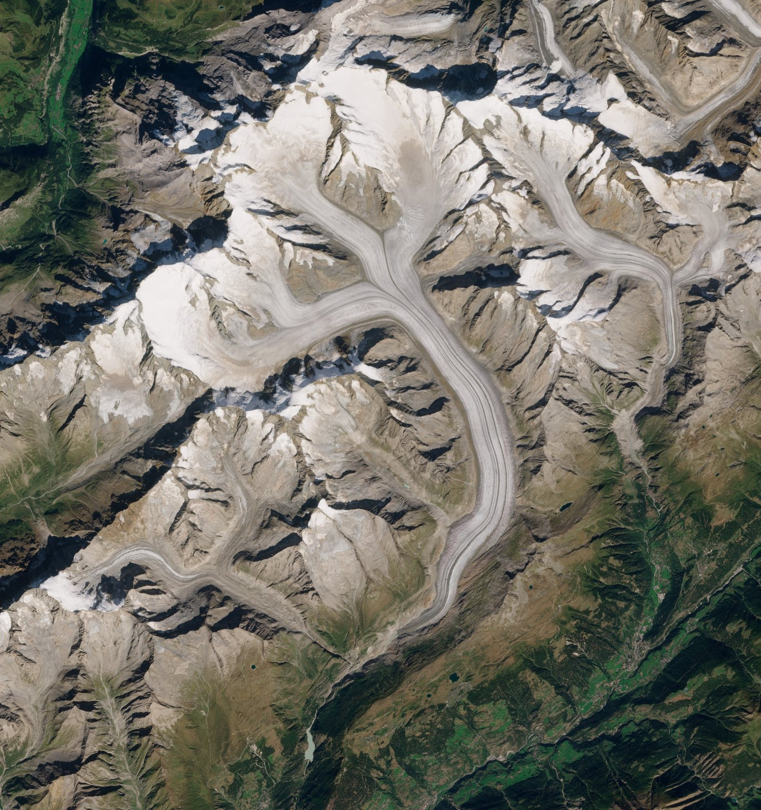
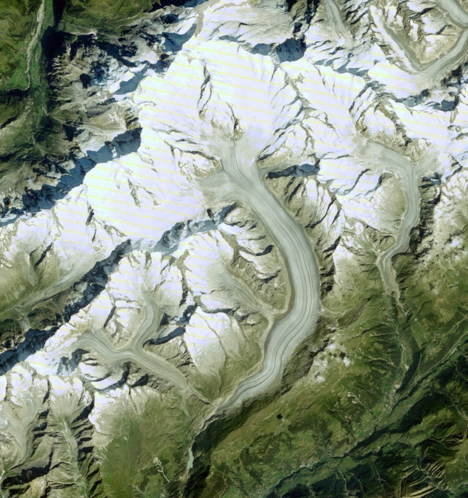

The beauty of glaciers, from space.
Flowing ice, striped by rock, winding between the peaks: the tongues of the ten largest Swiss glaciers, in fresh satellite pictures every summer. We pick the best picture of every year for you. Explore them on the map, fly over them in 3D and take pictures home.


Curated for you
The right picture, already chosen.
A glacier is photographed from space again and again, and most of those pictures are no use: clouds, shadows, snow. For every glacier and every year we pick the one that shows it best, so you never have to search an archive.
- ClearLittle cloud, and no cloud shadow over the glacier tongue.
- Late summerThe season when winter snow has melted and the ice shows.
- Framed for the glacierEvery picture is cut to the same box around the tongue, so years line up.
Why glaciers
Slow rivers that shape a world.
Landscape
They carve mountains and valleys
Ice grinds rock, pushes moraines and leaves the lakes, ridges and valleys we hike through.
Water
They feed rivers and lakes
Meltwater runs from the ice through summer into streams, lakes and the places downstream.
Wonder
They are seen best from above
From orbit, flow lines, moraines and meltwater colours show patterns you cannot see from the valley.
1 Choose a glacier
Which glacier do you want to see?
Click Switzerland on the map, then a glacier, or choose one from the list. More regions are in the making.
Iceland, Norway and more are in the making.
What you can do
Seven ways to look at a glacier.
Point at one, or tap it, to see it work.